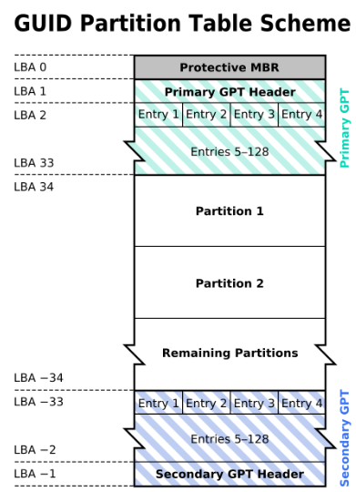
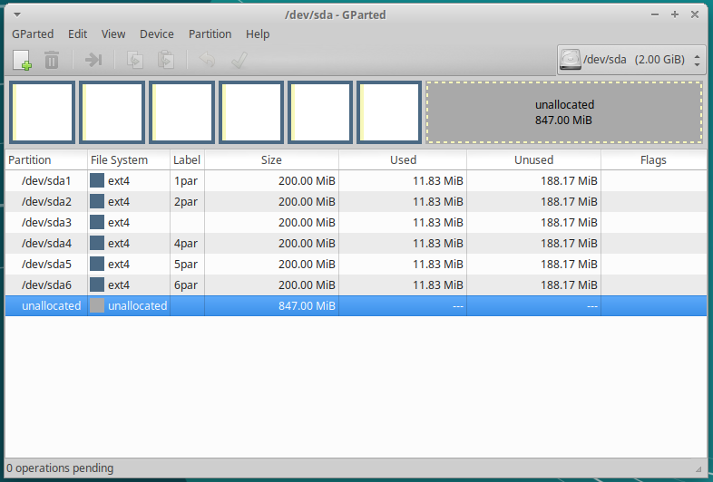

Maquinas Virtuales
Una máquina virtual es un software que emula a un ordenador completo, es decir, que puede hacerse pasar por otro dispositivo -como un PC- de tal modo que puedes ejecutar otro sistema operativo en su interior. Tiene su propio disco duro, memoria, tarjeta gráfica y demás componentes de hardware, aunque todos ellos son virtuales.
Que sus componentes sean virtuales no quiere decir necesariamente que no existan. Por ejemplo, una máquina virtual puede tener unos recursos reservados de 2 GB de RAM y 20 GB de disco duro, que salen del PC donde está instalada la máquina virtual
Hay varias aplicaciones muy conocidas capaz de hacer esto, aunque las más famosas son VMWare, VirtualBox, QEMU , etc..
En clase utilizaremos VirtualBox:

Resumen:
OVF/OVA : es un estándar abierto para empaquetar y distribuir un dispositivo virtual que consta de una o varias máquinas virtuales (VM).
Clonación completa, una copia exacta (incluyendo todos los archivos de disco duro virtual) de la máquina original serán creados.
Clonación enlazada, una nueva máquina será creada, pero los archivos de las unidades de disco duro virtuales serán vinculados a los archivos de disco duro virtual de la máquina original y no podrá mover la nueva máquina virtual a una computadora diferente sin mover los originales también.
RED
Cable conectado que se encuentra en la parte de opciones avanzadas en la sección de red de la MV (también en el menú contextual del icono de red que se encuentra en la parte inferior derecha de la ventana de la MV, eligiendo Connect Network Adapter, o a través del menú de la MV Dispositivos -> Red).
Modo NAT es la forma más sencilla que tiene una MV para acceder a una red externa. Por lo general, no se requiere ninguna configuración en la red, ni en el anfitrión ni en el invitado. Por esta razón, es el modo de red por defecto en VB. En modo NAT, VB coloca un router entre el exterior (hacia donde hace NAT) y el invitado. Dicho router posee un servidor DHCP que sirve hacia el interior. Este router mapea el tráfico desde y hacia la MV de forma transparente. Cada MV en modo NAT tendrá su propio router, por lo que estarán en redes aisladas, lo que implica, que por defecto, las MMVV que tienen su tarjeta de red en modo NAT no pueden verse entre sí.
Modo Red NAT, el cual funciona como el router de nuestra casa, es decir, los equipos que estén dentro de la misma red NAT podrán comunicarse entre sí, y es aquí donde radica la diferencia con el modo NAT el cual siempre constituye una red con un único equipo y no de varios como ahora es el caso. Para utilizarlo tenemos que crear la red NAT : Desde el menú Archivo -> Preferencias -> Red -> Redes NAT.
Modo Adaptador puente simula que la tarjeta virtual está conectada al mismo switch que la tarjeta física del anfitrión, por lo tanto, la MV se va a comportar como si fuese un equipo más dentro de la misma red física en la que está el equipo anfitrión.
Modo Red interna, podemos construir redes aisladas, en las cuales solo habrá comunicación entre las MsVs que pertenezcan a la misma red interna.
Modo Solo-anfitrión se utiliza para crear una red interna a la que pertenecerá también el equipo anfitrión, algo que no sucede en el modo Red interna.
Puede que en algún momento, por diversos motivos, nos encontremos con alguna dirección MAC duplicada en una MV (poco frecuente) o entre MV diferentes. Como ya sabemos, en una misma LAN no puede haber dos interfaces de red con igual MAC, esto nos daría problemas de red a nivel de enlace. Para evitar este problema debemos cambiar las MAC para que no estén duplicadas.
Comandos útiles virtualBox:
VBoxManage list vms
VBoxManage list runningvms
VBoxManage startvm 'Ubuntu Server 16.04' --type headless
VBoxManage controlvm 'Ubuntu Server 16.04' savestate
Particiones
Existen muchos tipos de sistemas de archivos. En la siguiente tabla vemos algunos de los más famosos:
Sistema archivos |
archivo (máx.) |
partición (máx.) |
SO Utilizado |
Soporta Usuarios |
|---|---|---|---|---|
FAT16 |
2GB |
2GB |
Windows |
NO |
FAT32 |
4GB |
2TB |
Windows |
NO |
NTFS |
~ TB |
~ EB |
Windows |
SI |
EXT3 |
2 TB |
32TB |
GNU/Linux |
SI |
EXT4 |
~ TB |
~ EB |
GNU/Linux |
SI |
Para implementar un sistema de archivos tendremos que crear una Tabla de particiones. Una tabla de particiones es un índice que divide el espacio de almacenamiento en distintas secciones, llamadas particiones, y que da ciertas características de cada partición, como por ejemplo el sistema de ficheros usado en ella o si la partición es arrancable, de solo lectura,… Hay distintos alternativas para definir la tabla de particiones, veremos a continuación la tabla de particiones en el MBR, también llamada tabla de particiones DOS. Usada en IBM PC y compatibles con sistemas BIOS y GUID Partition Table propuesta por la especificación EFI y permite ser usada por IBM PC y compatibles con BIOS y con UEFI.
Tabla de particiones en el MBR
El MBR “Master Boot Record” es el primer sector («sector cero») de un dispositivo de almacenamiento de datos, es decir que representan los 512 primeros bytes del disco. Los primeros 446 bytes y la tabla de particiones en los últimos 64. Para este sistema de particiones existen 3 tipos diferentes de particiones:

Partición primaria: Son las divisiones crudas o primarias del disco, solo puede haber 4 de éstas o 3 primarias y una extendida.
Partición extendida: También conocida como partición secundaria es otro tipo de partición que actúa como una partición primaria; sirve para contener múltiples unidades lógicas en su interior. Fue ideada para romper la limitación de 4 particiones primarias en un solo disco físico. Solo puede existir una partición de este tipo por disco, y solo sirve para contener particiones lógicas. Por lo tanto, es el único tipo de partición que no soporta un sistema de archivos directamente.
Partición lógica: Ocupa una porción de la partición extendida o la totalidad de la misma, la cual se ha formateado con un tipo específico de sistema de archivos (FAT32, NTFS, ext2,…) y se le ha asignado una unidad, así el sistema operativo reconoce las particiones lógicas o su sistema de archivos. Puede haber un máximo de 23 particiones lógicas en una partición extendida

Un disco duro puede contener un máximo de 4 particiones primarias o 3 particiones primarias y una extendida. Una partición extendida contiene un número “n” de particiones lógicas, solo puede existir una sola partición de este tipo en el disco duro. Las particiones lógicas se crean dentro de una partición extendida.
Ejemplos de particionados:
Sistema GNU/Linux en un disco de 500 GB.
1º Partición primaria de 80GB con formato ext4 y punto de montaje / (en esta partición estarán los archivos del SO)
2ª Partición primaria igual que la memoria RAM (4G) que tenga el equipo con formato swap (se usa para la memoria virtual temporal)
3º Partición primaria 415 GB con formato ext4 y punto de montaje /home (contiene la configuración y datos de los usuarios)
Sistema Windows en un disco de 500 GB
1º Partición primaria de 80 GB con formato ntfs (en esta partición estarán los archivos del SO)
2º Partición primaria de 420 GB con formato ntfs (contiene la configuración y datos de los usuarios)
Sistema GNU/Linux y Windows en un disco de 600 GB.
1º Partición primaria 80GB con formato ntfs
2º Partición primaria de 220 GB con formato ntf
3º Partición extendida * 1º Partición lógica de 76GB con formato ext4 y punto de montaje / * 2ª Partición lógica igual que la memoria RAM (4G) que tenga el equipo con formato swap * 3º Partición lógica 220 GB con formato ext4 y punto de montaje /home
GUID Partition Table (GPT).
Es parte del estándar Extensible Firmware Interface (EFI) propuesto por Intel para reemplazar el viejo BIOS del PC, heredada del IBM PC original.
Cada bloque lógico (LBA) tiene un tamaño de 512 bytes. Las direcciones LBA negativas indican una posición a partir del final del volumen, siendo −1 el último bloque direccionable.
Tiene un número ilimitado de particiones
Independientemente de como se cree la tabla de particiones, dejaremos una partición para el sistema operativo otra para los datos y en el caso de instalar un GNU/Linux otra para la swap. El SO de windows ~80G, Linux ~50G
Organización para GNU/Linux
Los sistemas GNU/ Linux identifican los discos duros empleando una combinación de letras y números : /dev/xxyN.
swap espacio de swap (o de intercambio), El swapping es el proceso por el que una página de memoria se copia en un espacio del disco configurado previamente para ello,para liberar esa memoria RAM.
/dev/ nombre del directorio donde residirán todos los archivos de dispositivo.
xx las dos primeras letras indican el tipo de dispositivo en el que residirá la partición.
hd para discos IDE/PATA
sd discos SATA y SCSI.
y letra que indica el número de disco duro (a,b,c…)
N número de partición (1,2,3…)
Ejemplos :
/dev/hda1 primera partición del primer diso duro IDE/PATA
/dev/sdb2 segunda partición del segundo discoduro SCSI y SATA
Comandos ms-dos
Desde el directorio raíz se accede al archivo mediante una ruta de acceso absoluta Si se accede al archivo desde el directorio actual, la ruta es una ruta de acceso relativa
cd, chdir cambia el directorio actual.
cd .. sube un directorio
cd indica el path en el que te encuetras
cd <Nombre directorio> cambia al directorio especificado
cd <letra unidad>: para cambiar de unidad
cls limpia la pantalla
dir lista los directorios y archivos de la unidad o directorio actual.
dir /ah archivos ocultos
dir /as archivos de sistema
dir /ad directorios
dir /aa archivos con indicador de lectura/escritura
dir /ar archivos de sólo lectura
dir /an orden alfabético por nombre
dir /ae orden alfabético por extensión
dir /ad fecha y hora (más antiguo)
dir /as tamaño (más pequeño)
dir /ag directorios agrupados antes de los archivos
dir /a-h el guión “-“ seguido de un indicador hace justamente lo contrario.
md, mkdir crea directorios
C:\> mkdir TEST C:\TEST> cd TEST C:\TEST>mkdir A B C C:\TEST>dir 15/03/2023 10:14 <DIR> . 15/03/2023 10:14 <DIR> .. 15/03/2023 10:14 <DIR> A 15/03/2023 10:14 <DIR> B 15/03/2023 10:14 <DIR> C 0 archivos 0 bytes 5 dirs 607.204.921.344 bytes libres
attrib visualiza y cambia los atributos de directorios y archivos
attrib ±r ±h … <archivo> /s …
attrib +r solo lectura
attrib +h hacerlo oculto
/s directorio actual y en todos los subdirectorio
C:\TEST>attrib +h A C:\>dir 15/03/2023 10:14 <DIR> . 15/03/2023 10:14 <DIR> .. 15/03/2023 10:14 <DIR> B 15/03/2023 10:14 <DIR> C 0 archivos 0 bytes 4 dirs 607.209.717.760 bytes libres C:\TEST>dir /ah 15/03/2023 10:14 <DIR> A 0 archivos 0 bytes 1 dirs 607.209.672.704 bytes libres
rd, rmdir - (rd /Q /S) Elimina un directorio.
/q modo silencioso
/S elimina subdirectorios
C:\TEST>dir 15/03/2023 10:27 <DIR> . 15/03/2023 10:27 <DIR> .. 15/03/2023 10:27 <DIR> A 15/03/2023 10:14 <DIR> B 15/03/2023 10:14 <DIR> C C:\TEST>rd A C:\TEST>dir 15/03/2023 10:27 <DIR> . 15/03/2023 10:27 <DIR> .. 15/03/2023 10:14 <DIR> B 15/03/2023 10:14 <DIR> C 0 archivos 0 bytes 4 dirs 607.204.515.840 bytes libres
move mueve o renombra un directorio o archivos. /Y sustituye los archivos sin pedir confirmación
C:\TEST>move B G Se ha(n) movido 1 directorio(s). C:\TEST>dir 15/03/2023 10:30 <DIR> . 15/03/2023 10:30 <DIR> .. 15/03/2023 10:14 <DIR> C 15/03/2023 10:14 <DIR> G 0 archivos 0 bytes 4 dirs 607.208.816.640 bytes libres
ren cambia el nombre de uno o más ficheros
C:\TEST>ren G A C:\TEST>dir 15/03/2023 10:32 <DIR> . 15/03/2023 10:32 <DIR> .. 15/03/2023 10:14 <DIR> A 15/03/2023 10:14 <DIR> C 0 archivos 0 bytes 4 dirs 607.208.062.976 bytes libres
tree/deltree lista/Borra un directorio con todos sus contenidos.
C:\TEST>tree Listado de rutas de carpetas El número de serie del volumen es 203A-19E6 C:. └───A ├───A1 │ ├───A2 │ │ ├───A4 │ │ └───A5 │ └───A3 └───A2
xcopy Copiar archivos y directorios * XCOPY <origen> <destino> /E /H /C /K
/E: Copia todas las subcarpetas y archivos, incluso si están vacíos.
/H: Copia los archivos ocultos y los archivos de sistema.
/C: Continúa copiando, incluso si ocurren errores.
/K: Copia los atributos de los archivos, como la fecha y hora de creación y modificación.
C:\TEST>xcopy A B /E /H /C /K ¿B especifica un archivo o un directorio como destino (F = archivo, D = directorio)? D 0 archivo(s) copiado(s) C:\TEST>tree C:. ├───A │ ├───A1 │ │ ├───A2 │ │ │ ├───A4 │ │ │ └───A5 │ │ └───A3 │ └───A2 └───B ├───A1 │ ├───A2 │ │ ├───A4 │ │ └───A5 │ └───A3 └───A2
echo - mostrar mensajes (eco) por pantalla, también puede activar o desactivar la presentación de comandos por pantalla
%APPDATA% ruta de los programas del usuario.
%CMDCMDLINE% comando al intérprete de comandos (cmd.exe).
%CD% muestra el directorio actual.
%COMPUTERNAME% nombre del equipo.
%DATE% fecha actual
%HOMEDRIVE% unidad en la que está ubicado el directorio actual del usuario.
%HOMEPATH% directorio actual del usuario.
%OS% sistema operativo instalado.
%PATH% archivos ejecutables más importantes del sistema.
%PATHEXT% extensiones que el sistema considera ejecutables.
%RANDOM% Muestra un número entero entre 0 y 32167 elegido al azar.
%SYSTEMDRIVE% unidad en la que se ubica el sistema
%SYSTEMROOT% directorio raíz del sistema.
%TEMP% directorio temporal para las aplicaciones.
%TMP% directorio temporal para las aplicaciones.
%TIME% Muestra la fecha del día.
%USERDOMAIN% dominio al que pertenece la cuenta actual.
%USERNAME% nombre de usuario que corresponde a la cuenta actual.
%USERPROFILE% ubicación del perfil de usuario de la cuenta actual.
%WINDIR% directorio del sistema
set - Muestra, establece o quita variables de entorno
Redireccionamiento Envía la salida a un archivo o dispositivo (si no existe lo crea)
C:\TEST>echo hola > salida.txt C:\TEST>echo adios >> salida.txt
type - Muestra el contenido de un fichero.
C:\TEST>type salida.txt hola adios
more presenta información de salida pantalla por pantalla
copy copiar un archivos, /Y sustituye los archivos sin pedir confirmación
C:\TEST>copy salida.txt salida2.txt
fc compara archivos.
C:\TEST>echo 1 >> salida2.txt C:\TEST>fc salida.txt salida2.txt Comparando archivos salida.txt y SALIDA2.TXT ***** salida.txt ***** SALIDA2.TXT 1 *****
find - Busca una cadena de texto específica en un archivo o en varios archivos
C:\TEST>find /? Busca una cadena de texto en uno o más archivos. FIND [/V] [/C] [/N] [/I] [/OFF[LINE]] "cadena" [[unidad:][ruta]archivo[ ...]] /V Muestra todas las líneas que no tengan la cadena especificada. /C Muestra solo el número de líneas que contienen la cadena. /N Muestra el número de línea de cada línea. /I Omite mayúsculas/minúsculas al buscar una cadena. /OFF[LINE] No omite archivos con el atributo "sin conexión" establecido. "cadena" Especifica el texto que se desea buscar. [unidad:][ruta]archivo Especifica el o los archivos a buscar. Si no se especifica una ruta, FIND busca el texto que se escriba en el símbolo del sistema o que se canalice desde otro comando. C:\TEST>find "hola" salida.txt ---------- SALIDA.TXT hola C:\TEST>find /V "hola" salida.txt ---------- SALIDA.TXT adios C:\TEST>find /N "hola" salida.txt ---------- SALIDA.TXT [1]hola
del elimina archivos
C:\TEST>del salida2.txt
ping se utiliza para medir la latencia o tiempo que tardan en comunicarse dos puntos remotos
C:\TEST>ping 8.8.8.8 Haciendo ping a 8.8.8.8 con 32 bytes de datos: Respuesta desde 8.8.8.8: bytes=32 tiempo=4ms TTL=115 Respuesta desde 8.8.8.8: bytes=32 tiempo=4ms TTL=115 Respuesta desde 8.8.8.8: bytes=32 tiempo=7ms TTL=115 Respuesta desde 8.8.8.8: bytes=32 tiempo=9ms TTL=115 Estadísticas de ping para 8.8.8.8: Paquetes: enviados = 4, recibidos = 4, perdidos = 0 (0% perdidos), Tiempos aproximados de ida y vuelta en milisegundos: Mínimo = 4ms, Máximo = 9ms, Media = 6ms
ipconfig muestra los valores de configuración de red de TCP/IP
C:\TEST>ipconfig Configuración IP de Windows Adaptador de Ethernet vEthernet (WSL): Sufijo DNS específico para la conexión. . : Vínculo: dirección IPv6 local. . . : fe80::a32:a5ec:1b5a:7617%40 Dirección IPv4. . . . . . . . . . . . . . : 192.168.0.1 Máscara de subred . . . . . . . . . . . . : 255.255.240.0 Puerta de enlace predeterminada . . . . . :
sort (Ordenar): Lee información de entrada, ordena datos y escribe los resultados en la pantalla, en un archivo o en otro dispositivo.
C:\TEST>sort salida.txt adios hola
ver - Muestra la versión del Sistema Operativo.
C:\TEST>ver Microsoft Windows [Versión 10.0.19044.2486]
vol - Muestra la etiqueta del disco duro y su volumen (si lo tiene).
C:\TEST>vol El volumen de la unidad C no tiene etiqueta. El número de serie del volumen es: 203A-19E6
Scripting .bat
Un archivo o programa de procesamiento por lotes es un archivo de texto sin formato que contiene uno o más comandos de MS-DOS y que tiene asignado una extensión BAT.
Cuando se escribe el nombre del programa de procesamiento por lotes en la línea de comandos, los comandos se ejecutan como un grupo.
pause: suspende la ejecución de un programa de procesamiento por lotes y muestra un mensaje indicando al usuario que presione cualquier tecla para continuar.
rem permite que se incluyan comentarios
echo [texto] muestra el texto por pantalla @(on/off) para presentar los comandos por pantalla en un script
Ejemplo:
C:\>type hola.bat @echo off rem Esto es un comentario rem @echo on se presentaran los comandos por pantalla echo Hola Mundo pause C:\>hola.bat Hola Mundo Presione una tecla para continuar . . .
for (repite un comando)
FOR %%variable IN (conjunto) DO comando [parametros_del_comando]
Ejemplo:
C:>type for.bat @echo off echo ------------------------------- echo cuenta hasta 10 de 2 en 2 for /L %%j in (1,2,10) do echo hola %%j C:\>for.bat ------------------------------- cuena hasta 10 de 2 en 2 hola 1 hola 3 hola 5 hola 7 hola 9
Ejemplo con el parámetro /R ejecuta el comando recursivamente:
for /R %x in (*) do @echo %x
Visualizamos todas las dll que empiecen por a de C:WindowsSystem32
for /R C:\Windows\System32 %x in (A*.dll) do @echo %xde C:\WINNT
Parámetros de entrada, los valores suministrados al ejecutar el archivo .bat se les llaman argumentos y se denotan %0, %1, …, %9.
shift cambia los valores de los parámetros reemplazables %0 a %9 copiando cada parámetro en el anterior, es decir, el valor de %1 es copiado en %0, el valor de %2 es copiado en %1 y así sucesivamente.
if (condicional)
C:\>type if.bat @echo off set a=%1 set b=%2 echo a = %a% ; b = %b% if %a% equ %b% echo %b% y %b% son iguales if %a% neq %b% echo %b% y %b% son distintos if %a% leq %b% echo %b% es menor o igual que %b% if %a% geq %b% echo %b% es mayor o igual que %b% if %a% lss %b% echo %b% es menor que %b% if %a% gtr %b% echo %b% es mayor que %b% echo ------------------------------------- C:\> if.bat 3 3 a = 3 ; b = 3 3 y 3 son iguales 3 es menor o igual que 3 3 es mayor o igual que 3 ------------------------------------- C:\> if.bat 3 5 a = 3 ; b = 5 5 y 5 son distintos 5 es menor o igual que 5 5 es menor que 5 ------------------------------------- C:\> if.bat 3 1 a = 3 ; b = 1 1 y 1 son distintos 1 es mayor o igual que 1 1 es mayor que 1 -------------------------------------
goto se va a una línea marcada por una etiqueta especificada por el usuario dentro de un programa de procesamiento por lotes.
PowerShell
PowerShell es una interfaz de consola con posibilidad de escritura y unión de comandos por medio de instrucciones. Es compatible con muchas plataformas, incluyendo Windows, macOS y Linux. PowerShell se distribuye bajo la licencia MIT, que es una licencia de software libre y de código abierto
Control de procesos y servicios
ps -> Get-Process ver procesos
kill -> Stop-Process mata procesos
Get-Service -ProcessName <servicio>
Stop-Service -ProcessName <servicio>
Start-Service -ProcessName <servicio>
Suspend-Service -ProcessName <servicio>
Ejemplo:
calc.exe
Get-Process -ProcessName CalculatorApp
Stop-Process -ProcessName CalculatorApp
calc.exe
Stop-Process -Id 2828
Caracteres especiales
* ? » > >> |
Ficheros y directorios
cp -r -> Copy-Item copiar
mv -> Move-Item mover, renombrar
rm -> Remove-Item borrar
mkdir crear directorio
pwd -> Get-Location donde te encuentras
ls -> Get-ChildItem listar archivos y carpetas, para ver los archivos ocultos -h
diff -> Compare-Object diferencias entre ficheros y directorios
echo repetir salida estándar
Get-ChildItem -Recurse -Filter “*.txt” es parecido al comando find
Get-Help -Name Get-ChildItem obtener ayuda
Test-Path -Path <archivo> nos dice si exite el archivo o carpeta
select -> Select-Object
cat archivo.dat | select -Last 2
cat archivo.dat -Head 12 | select -Last 1
cat archivo.dat | select -First 10
Visualizadores de archivos
cat -> Get-Content visualizar el contenido archivo
Get-Content archivo.dat -head 10
Get-Content archivo.dat | select -First 10 # head
Get-Content archivo.dat -tail 10 es como el comando tail en GNULinux
Get-Content archivo.dat -tail 10 -wait es como el comando tail -f en GNULinux
Get-Content archivo.dat | %{ $_ -replace “A”, “B” } reemplazar
more mostrar archivos haciendo pausa en cada pantalla
Filtros y búsqueda información
sort -> Sort-Object ordenar
sls -> Select-String = grep filtrar,
Select-String -Pattern <texto> -Quiet nos devuelve solo True o nada echo $(Select-String -Pattern «texto» archivo.dat| Measure-Object -Character).Characters, es como el comando grep -c GNULinux
ft -> Format-Table dar a la salida formato de tabla : Get-Service | Format-Table -Property Name, DependentServices
Alias
New-Alias -Name «ver» -Value Get-ChildItem
Get-Alias ver los alias que hay en el sistema
Gestión de usuarios
Para hacerte administrador: start-process powershell -verb runas*
Listar usuarios, grupos y usuarios del grupo
Get-LocalUser
Get-LocalGroup
Get-LocalGroupMember -Name nombre_grupo
Crear un usuario con contraseña
$Password = Read-Host –AsSecureString
New-LocalUser -Name nombre_usuario -Password $Password
Sin que pregunte: $Password = ConvertTo-SecureString «alumno» -AsPlainText -Force
Crear un usuario sin contraseña
New-LocalUser -Name nombre_usuario -NoPassword
Se la podemos asignar después: Set-LocalUser -Name nombre_usuario -Password $Password
Asignar usuario a un grupo
Add-LocalGroupMember -Group nombre_grupo -Member nombre_usuario
Eliminar un usuario
Remove-LocalUser -Name nombre_usuario
Crear y borrar un grupo
New-LocalGroup -Name nombre_grupo
Remove-LocalGroup -Name nombre_grupo
Configuración de Windows
shutdown /r reiniciamos, si añadimos /f lo hace de forma forzosa
shutdown /s apagar
Cambiar IP netsh interface ip set address name=»Ethernet» source=static addr=10.4.104.100 mask=255.0.0.0 gateway=10.0.0.2
ipconfig consultar ip
Cambiar el DNS netsh interface ip set dnsserver «Ethernet» static 8.8.8.8 primary
ipconfig /all consultar dns
Rename-Computer -NewName «WS19tunombre» cambiar el nombre del equipo
Habilitar ping netsh advfirewall firewall add rule name=»Habilitar respuesta ICMP IPv4» protocol=icmpv4:8,any dir=in action=allow
Instalar el servidor ssh
Get-WindowsCapability -Online | Where-Object Name -like 'OpenSSH*' Add-WindowsCapability -Online -Name OpenSSH.Server~~~~0.0.1.0 #Iniciar el servicio ssh : Start-Service sshd #Para iniciar el servicio ssh durante el arranque de forma automática: Set-Service -Name sshd -StartupType 'Automatic'Para conectarse sin contraseña ssh -X Administrador@IP: Copia tu clave publica .ssh/id_rsa.pub a IP:C:UsersAdministrador.sshauthorized_keys
Arranque de Windows
lo primero que se va a cargar son los ajustes del firmware, por lo que se comprueba que el sistema de disco es válido para llevar a cabo el inicio del PC, y en el caso de que el sistema esté listo se pasa a la siguiente fase. Por tanto, si el equipo tiene un MBR válido, lo que se traduce a un registro de arranque maestro, el proceso de arranque carga el conocido como “Administrador de arranque de Windows”, para a continuación pasar a la segunda fase.
Tras esto entra en juego el administrador de arranque de Windows, lo que sirve para determinar si en ese equipo disponemos de varios sistemas operativos instalados, o tan solo de uno. En el caso de que sean varios los sistemas que pueden arrancar el PC, en pantalla se muestra un menú con los nombres de estos para que podamos seleccionar el que más nos interesa en ese momento, todo con el fin de que se realice el arranque en base a nuestras necesidades.
inicio de windows Por tanto, al elegir Windows 10, que es el que nos ocupa en este caso, se pone en marcha el fichero “Winload.exe” que es el que comienza la carga del software de Microsoft. Es entonces cuando empieza la tercera fase del proceso, por lo que el mencionado “WinLoad.exe” comienza con la carga de los controladores más importantes con los que cuenta el equipo y así poder iniciar el Kernel del propio Windows 10. Por tanto, en este paso el núcleo del sistema utiliza los controladores para «comunicarse» con el hardware que tenemos instalado y lograr que el proceso de arranque siga su curso sin problema alguno.
Y para terminar os vamos a hablar de la última fase, que es en la que se recoge la configuración del Registro de Windows, así como el resto controladores adicionales, entre otros elementos necesarios para el correcto funcionamiento del sistema operativo.
or lo tanto, una vez se carga esto, el control en ese momento lo toma el proceso de gestión del sistema, con lo que a continuación se carga la interfaz de usuario, además del resto del hardware y el software instalado. Por tanto, finalizado este paso, en pantalla aparece la habitual interfaz de inicio de sesión de Windows 10 para que podamos introducir las correspondientes credenciales de acceso.
Eso sí también merece la pena saber que cuando iniciamos Windows 10 en un ordenador que tiene soporte UEFI, la función llamada “Trusted Boot” protege el equipo desde el mismo momento en el que comienza el inicio del mismo. Así, lo primero que hace es localizar el gestor de arranque del sistema operativo, mientras que los PCs sin arranque seguro ejecutan cualquier gestor de arranque que encuentren en el disco duro, pero con UEFI, en primer lugar se verifica que el firmware esté firmado digitalmente para que todo el proceso se lleve a cabo con mayor seguridad y fiabilidad.
msconfig
Es una utilidad del sistema operativo cuya función inicial era la de corregir problemas asociados con el inicio de Windows, pero la cual poco a poco ha tomado más fuerza gracias a sus diversas alternativas de uso. Gracias a msconfig será posible ejecutar tareas como:
Facilidad para configurar la forma de inicio de Windows. Cambiar el procedimiento de inicio. Seleccionar los servicios de inicio y programas que serán cargados junto con el sistema y muchas acciones más.
Acceder a msconfig en Windows 10: Ejecutar el comando msconfig

Como vemos, la utilidad msconfig nos brinda una serie de opciones a elegir, estas son:
Inicio normal. Es la opción por defecto e indica que Windows 10 cargara todos los elementos, controladores y servicios de inicio que han sido instalados, únicamente cuando se han realizado cambios en los controladores, servicios o aplicaciones que se cargan durante el arranque podemos seleccionar una opción adicional.
Inicio con diagnóstic. Su uso es similar al inicio en modo seguro ya conocido por todos, al seleccionar esta opción solo se ejecutarán los servicios y controladores de Windows 10, adicional a ello, el inicio de Diagnóstico está en la capacidad de ejecutar servicios de red o servicios aplicaciones de terceros, que son de un alto impacto para la seguridad del sistema tal como el antivirus, firewall, etc. Por lo general podemos iniciar Windows 10 con esta opción para comprobar si los servicios de Windows están afectando algún parámetro de uso del sistema y así descartar estas opciones.
Inicio selectivo. Al seleccionar esta opción, Windows 10 iniciará solo con los servicios y controladores básicos, también con esta opción será posible seleccionar otros servicios y elementos de inicio a ejecutar directamente desde las pestañas Servicios y Inicio.
Hoy en día es normal, para muchos usuarios, contar con modo de arranque dual el cual nos permite tener dos sistemas operativos instalados en el disco duro aprovechando así todos los recursos de hardware, en caso de contar con más de un sistema operativo instalado, la herramienta msconfig nos da la opción de elegir cuál de ellos será la opción predeterminada.

Aquí podemos cambiar sistema de arranque inicio por defecto en Windows 10, si tienes sistema dual boot, aquí tienes los pasos para cambiar cuál es el Sistema Operativo que se inicia por defecto desde Windows 10. También podemos cambiar el tiempo de espera que por defecto son 30 segundos.
Existen una serie de opciones avanzadas en el sistema operativo que nos darán la opción de mejorar el arranque del sistema operativo, estas opciones avanzadas involucran cambios a nivel de memoria, procesadores o depuración de elementos.

En la sección “Numero de procesadores” podemos definir la cantidad de procesadores disponibles en base al CPU de nuestro equipo (2, 4, 8 o más procesadores).
En la sección “Cantidad máxima de memoria” podremos asignar la cantidad de RAM que deseamos que Windows 10 aplique al proceso de arranque, allí podemos usar toda la capacidad de la RAM instalada.
En el campo “Configuración global de depuración”, esta opción esta deshabilitada por defecto y esta función se encarga de especificar la configuración de conexión del depurador en el equipo local con el fin de que un depurador de kernel pueda comunicarse con un host depurador, la conexión del depurador entre los equipos host y de destino puede ser de tipo Serie, IEEE 1394 o USB 2.0, en el puerto de depuración se especifica qué tipo de puerto será usado como tipo de conexión y puerto serie, el valor predeterminado es COM 1, finalmente la velocidad en baudios indica la velocidad en baudios que se usará al momento de seleccionar el puerto de depuración y el tipo de conexión de depuración, esta configuración es opcional y los valores válidos son 9600, 19.200, 38.400, 57.600 y 115.200. El valor predeterminado es 115.200 bps.
Para configurar este arranque en modo seguro, desde la pestaña Arranque, activaremos la casilla “Arranque a prueba de errores” y allí seleccionar alguna de las opciones disponibles que son la siguientes:
Mínimo. Con esta opción el arranque seguro se ejecuta de forma normal, con una interfaz de usuario y sin servicios de red habilitados.
Shell alterno. Esta opción abre el símbolo del sistema en modo a prueba de errores. Los servicios de red y la interfaz gráfica de usuario están deshabilitados por defecto.
Reparar Active Directory. Es un inicio seguro normal que ejecuta los servicios y características de Active Directory, útil para equipos en un dominio.
Red. Ejecuta el inicio seguro normal con servicios de red habilitados.
Para deshabilitar opciones de arranque Windows 10, En la misma pestaña de arranque, encontramos en la parte inferior derecha una serie de opciones para aplicar a los procedimientos de arranque estándar y en modo seguro, estas opciones son.
Sin arranque de GUI. Al seleccionar esta opción, durante el arranque, no se mostrará la pantalla de carga habitual, tan solo una pantalla negra sin información con el fin de mejorar la velocidad de arranque.
Registro de arranque. En el proceso de inicio, Windows 10 escribe un registro completo detallando toda la información sobre el proceso de inicio, por defecto esta información está en la ruta C:WindowsNtbtlog.txt.
Vídeo base. Al seleccionar esta opción, ejecutamos un inicio de Windows estándar, en el cual solo serán cargados los controladores de vídeo estándar que vienen con el sistema operativo por defecto, en lugar de los específicos de la tarjeta de vídeo.
Información de arranque del SO. Si usamos esta opción, también debemos activar la opción Sin arranque de GUI. Con estas opciones, la pantalla de carga de Windows habitual se verá reemplazada por una pantalla negra, donde veremos información completa sobre los controladores que son cargados durante el proceso de inicio, así, en caso de que Windows se bloquee en el proceso de arranque, este modo de visualización puede ser útil para encontrar el controlador que causa el bloqueo y así facilitar las tareas de soporte.
Nota: En caso de que sea necesario que los cambios que hemos realizado sean constantes, debemos activar la casilla “Convertir en permanente toda la configuración de arranque”, o para volver al inicio normal utilizar otra vez el comando msconfig
Podemos también definir los servicios que serán cargados en el arranque Windows 10. En la pestaña «Servicios» será posible activar los servicios que serán ejecutados al inicio y desmarcar los que no lo serán, en caso de desear ver solo los servicios de terceros instalados por las aplicaciones, debemos activar la casilla “Ocultar todos los servicios de Microsoft”. Es aconsejable tener conocimiento sobre qué servicios han de deshabilitarse ya que si deshabilitamos algún servicio de Microsoft podemos causar anomalías en el sistema. Para definir los programas que serán cargados en el arranque Windows 10 Es normal que los programa y aplicaciones que instalamos en Windows 10, cuenten con una opción la cual permite que estos sean cargados desde el proceso de arranque lo cual representa un impacto negativo en el rendimiento de este.
Para deshabilitar programas de Inicio arranque Windows 10, vamos a la pestaña “Inicio de Windows” y allí damos clic en la línea “Abrir el administrador de tareas” el cual nos redireccionará a la pestaña “Inicio” del administrador de tareas:

Si deseamos impedir que alguno de ellos sea ejecutado contamos con las siguientes opciones: Dar clic derecho sobre él y seleccionar la opción “Deshabilitar”. Seleccionarlo y pulsar en el botón “Deshabilitar” ubicado en la parte inferior
Finalmente, en la pestaña “Herramientas” de msconfig, disponemos de un conjunto de herramientas del sistema como Información del sistema, Editor del registro, Visor de eventos, Monitor de rendimiento y más, las cuales nos permiten realizar una tarea mucho más completa. Podemos ver que cada herramienta tiene asociado un comando de ejecución.
Gestión de servicios (PowerShell)
Get-Service
New-Service
Restart-Service
Resume-Service
Set-Service
Start-Service
Stop-Service
Suspend-Service
Ejemplo de uso:
PS C:\Users\alumno> Get-Service -Name Spooler
Status Name DisplayName
------ ---- -----------
Running Spooler Cola de impresión
PS C:\Users\alumno> Restart-Service -Name Spooler
ADVERTENCIA: Esperando a que se inicie el servicio 'Cola de
impresión (Spooler)'...
Configuración Windows
Menú inicio

Explorador de Windows
El explorador de Windows es un componente principal del sistema operativo que permite administrar el equipo, crear archivos y carpetas, lanzar aplicaciones, etc

Podemos buscar archivos por tamaño System.Size: > 100 MB
Podemos buscar por una cierta extensión y tamaño System.Size: > 100 MB .reg
Solo por extensión *.reg, empiezan por An y acaban por dat An*dat
Entre varios tamaños System.Size: > 100 MB < 200MB
por fecha de modificación fechademodificación:hoy
Administrador de tareas
Para ver el Administrador de tareas, tienes que hacer clic sobre cualquier espacio libre de la barra de tareas del Escritorio.

Poner más detalles

Además, en la solapa Rendimiento obtendremos información gráfica y numérica sobre el uso del procesador, la memoria, el disco y el hardware de red durante el último minuto.
Información sobre el procesador.

Mientras estemos mostrando la información sobre la CPU, podremos revisar bastantes datos sobre ella:
El grado de utilización en este instante
Su velocidad.
La cantidad de procesos y subprocesos que está ejecutando.
Los identificadores que tiene asignados.
El tiempo que lleva funcionando desde que se arrancó el ordenador.
El tamaño de la caché de nivel 1 (L1) y de nivel 2 (L2).
El número de núcleos que incluye.
etc.
Además, en la parte superior, se muestra su modelo exacto (en mi caso, Intel(R) Core(TM) i5-4460 a 3,2GHz) y un gráfico que muestra su comportamiento en el último minuto.
Si observáramos un consumo excesivo de procesador (un gráfico estadístico que muestra continuamente valores elevados), podríamos tener un proceso que funciona de forma inadecuada y está consumiendo demasiado tiempo de procesador. También puede ocurrir que estemos ejecutando demasiados programas de forma simultánea. En cualquier caso, habremos comprobado que el procesador estará suponiendo un cuello de botella en el rendimiento del equipo.
Cuando tenemos varios procesadores, o un procesador con varios núcleos, podemos mostrar gráficos de uso diferenciados para cada uno de ellos.Haciendo clic sobre la categoría Memoria en el panel izquierdo, obtendremos detalles sobre el uso de la RAM.
Información sobre la memoria.

Sobre la memoria, podremos consultar la cantidad que se está usando y la que aún nos queda disponible. Además, podemos ver cuál es el máximo que podremos utilizar (incluyendo la memoria virtual), cuanta tenemos destinada a caché, la cantidad que tenemos paginada y la que aún no lo está.
Como en el caso anterior, también disponemos de una representación gráfica que nos muestra la evolución en el uso de la memoria durante el último minuto. Además, ahora se incluye un gráfico que nos representa (de izquierda a derecha) diferentes datos:
La cantidad de memoria ocupada por los procesos, los controladores y el sistema operativo.
La memoria que debe escribirse a disco.
La memoria que contiene datos y código a modo de caché, pero que no se están usando de forma activa.
La memoria libre (la primera que será asignada cuando sea necesario).
Si observamos un nivel de ocupación excesivamente elevado (porque estamos ejecutando demasiados programas para la cantidad de memoria instalada o porque tenemos un proceso que está consumiendo una cantidad excesiva), el sistema operativo se estará viendo forzado a usar de forma intensiva la memoria virtual. Esto supondrá un intercambio continuo de páginas de memoria entre la RAM y el disco, lo que puede implicar, de nuevo, un cuello de botella en el sistema que afectará directamente a su rendimiento.
Haciendo clic sobre la categoría Disco en el panel izquierdo, obtendremos detalles sobre el uso del disco duro.
Aspecto de la información sobre el disco.

Como ves en la imagen, cuando tenemos más de un disco, aparecen varias entradas, etiquetadas como Disco 0, Disco 1, etc.
En cada uno de ellos podremos consultar diferentes datos:
El tiempo de actividad (en porcentaje).
El tiempo medio de respuesta (en milisegundos).
La velocidad de lectura y escritura en cada instante (medida en KB/s).
La capacidad total (antes y después de formatear).
Si se trata del disco donde está instalado el sistema.
Si contiene el archivo de paginación.
Además, en la parte superior, disponemos de una representación gráfica del tiempo de actividad y de la velocidad de transferencia en el último minuto
Haciendo clic sobre la categoría Ethernet en el panel izquierdo, obtendremos detalles sobre el uso de la conexión de red.
Aspecto de la información sobre la conexión de red.

Como en el caso anterior, es importante que aclaremos que, en el caso de que nuestro ordenador tuviese varias tarjetas de red, en el panel izquierdo aparecería una entrada por cada una de ellas.
Entre los datos que contiene, nos encontramos los siguientes:
La velocidad de envío y recepción de datos en cada momento (medida en Kbps).
La dirección IP (tanto IPv4 como IPv6).
El nombre DNS del equipo.
etc.
Como antes, la parte superior incluye un gráfico que representa la actividad del dispositivo en el último minuto.
Por último, debemos tener en cuenta que el panel izquierdo puede contener otros elementos, según los dispositivos que tenga nuestro ordenador. En este sentido, es frecuente que incluya entradas para Wi-Fi o Bluetooth.
Algo que puede resultar muy útil es mantener la ventana del Administrador de tareas en primer plano.
Lo conseguimos eligiendo la opción Siempre visible dentro del menú Opciones.

Incluso podemos reducir la ventana para que sólo nos muestre el gráfico que queramos.
En el caso de que queramos finalizar una tarea con el Administrador de tareas simplemente la seleccionamos y finalizamos tarea.

Otra pestaña muy interesante es la de Rendimiento, que se centra en mostrarnos información sobre nuestros componentes internos de hardware como el procesador, la memoria o el disco duro.
Aquí podremos conocer, en tiempo real, el consumo que hacemos de cada una de los núcleos del procesador, la velocidad de procesado actual, la memoria RAM libre y ocupada, así como la velocidad de trabajo de los discos duros que tenemos instalados e incluso de la conexión a la red que estemos usando en ese mismo instante.

Copia de seguridad y restauración en Windows 10
Existen dos tipos principales de copias de seguridad:
Copia de seguridad de los archivos. La copia de seguridad de archivos te permite crear una copia de los documentos que tienes guardados en tu PC, ya sea de manera individual o de varios ficheros a la vez, para tenerlos en otro dispositivo y recuperarlos cuando quieras.
Copia de seguridad del sistema. La copia de seguridad del sistema te permite crear una copia de todo el sistema operativo Windows que en ese momento tienes en tu ordenador, es decir, de todos los programas, los archivos y los valores de configuración.
El registro de Windows
El registro de Windows es una base de datos dónde aplicaciones y controladores guardan/buscan la información necesaria para funcionar. Su estructura esta formada en forma de carpetas:
Inicio /Ejecutar/RegEdit

HKEY = HomeKey = Clave
Tipos:
CONSTANTES: Se crean y modifican sólo en determinados momentos. Modificación del sistema, instalación/eliminación de un programa, creación de un usuario….
DINÁMICAS: Se vuelven a crear cuando se incia Windows.
HKEYS’S
HKEY_CLASSES_ROOT, contiene información sobre aplicaciones registradas.
HKEY_CURRENT_USER, almacena configuraciones específicas del usuario con sesión iniciada en esos momentos.
Acceso directo a la clave HKEY_USER que concierne al Directorio Activo.
Control Panel/Desktop/WallPaper/ Imagen de fondo de escritorio
HKEY_LOCAL_MACHINE, almacena configuraciones específicas del equipo local.
HKEY_USERS, contiene subclaves correspondientes a las claves
HKEY_CURRENT_USER de cada perfil de usuario cargado activamente en el equipo, aunque normalmente solo se cargan los subárboles de usuario correspondientes a los usuarios con sesión iniciada en esos momentos.
HKEY_CURRENT_CONFIG, contiene la información referente a algunos de los dispositivos Plug and Play que tiene el ordenador.
Búsquedas en el registro
HKEY correspondiente, y hacemos: Edición / Buscar
Limpieza del registro
Analiza las claves HKEY_CLASSES_ROOT, localiza los valores erróneos y antes de eliminarlos, propone guardarlos en el archivo undo.reg.
Copia de seguridad del registro, es aconsejable realizarlos siempre antes que:
Para realizar la copia: Archivo > Exportar
Para realizar la restaurar : Archivo > Importar
Copia parcial
Seleccionamos la rama o la clave a guardar
Pulsamos en: Registro /Exportar archivo de registro
Comandos Panel de Control
ACCESS.CPL: abre las opciones de accesibilidad (únicamente para XP).
APPWIZ.CPL: abre Agregar o quitar programas.
AZMAN.MSC: abre el administrador de autorización (únicamente para Vista).
CERTMGR.MSC: abre los certificados para el usuario actual.
CLICONFG: abre la herramienta de configuración de cliente de red SQL.
COLLAB.CPL: abre la visualización instantánea (únicamente para Vista).
COMEXP.MSC o DCOMCNFG: abre los servicio de componentes (únicamente para Vista).
COMPMGMT.MSC: abre la administración de equipos.
COMPUTERDEFAULTS: abre la herramienta de programas predeterminados (únicamente para Vista).
CONTROL /NAME MICROSOFT.BACKUPANDRESTORECENTER: abre el centro de respaldo y recuperación (para Vista únicamente).
CONTROL ADMINTOOLS: abre las herramientas administrativas.
CONTROL COLOR: abre las propiedades de pantalla.
CONTROL FOLDERS: abre las opciones de carpeta.
CONTROL FONTS: abre las fuentes.
CONTROL INTERNATIONAL o INTL.CPL: abre la configuración regional y de idioma.
CONTROL KEYBOARD: abre las propiedades del teclado.
CONTROL MOUSE o MAIN.CPL: abre las propiedades del mouse.
CONTROL PRINTERS: impresoras y faxes disponibles.
CONTROL USERPASSWORDS: abre las cuentas de usuario.
CONTROL USERPASSWORDS2 o NETPLWIZ: administración de usuarios y su acceso.
CONTROL: abre el Panel de control.
CREDWIZ: abre la ventana para hacer copias de seguridad y restaurar contraseñas de usuarios (únicamente para Vista).
DESK.CPL: abre las propiedades de pantalla.
DEVMGMT.MSC: abre el Administrador de dispositivos.
DRWTSN32: abre Dr. Watson (para XP únicamente).
DXDIAG: abre la herramienta de diagnóstico de DirectX.
EVENTVWR o EVENTVWR.MSC: abre el Visor de sucesos.
FSMGMT.MSC: abre las carpetas compartidas.
GPEDIT.MSC: abre el editor de directiva de grupo (para las ediciones profesionales y más de Windows).
HDWWIZ.CPL: abre el asistente para agregar hardware.
INFOCARDCPL.CPL: abre el asistente de compatibilidad de programas.
IRPROPS.CPL: abre la utilidad de infrarrojos.
ISCSICPL: abre la herramienta de configuración del iniciador ISCI Microsoft (únicamente para Vista).
JOY.CPL: abre el dispositivo de juegos.
LPKSETUP: abre el asistente de instalación y desinstalación de idiomas (únicamente para Vista).
LUSRMGR.MSC: abre el editor de usuarios locales y grupos.
MDSCHED: abre la herramienta de diagnóstico de la memoria (únicamente para Vista).
MMC: abre una nueva consola vacía.
MMSYS.CPL: abre las propiedades de dispositivos de sonido y audio.
MOBSYNC: abre elementos para sincronizar.
MSCONFIG: abre la utilidad de configuración del sistema.
NAPCLCFG.MSC: abre la herramienta de configuración del cliente NAP (únicamente para Vista).
NTMSMGR.MSC: abre el administrador de medios de almacenamiento extraíbles.
NTMSOPRQ.MSC: abre las solicitudes del operador de medios de almacenamiento extraíbles.
ODBCAD32: abre el administrador de orígenes de datos ODBC.
OPTIONALFEATURES: abre la herramienta Agregar o quitar componentes Windows (únicamente para Vista).
PERFMON o PERFMON.MSC: abre el monitor de rendimiento de Windows.
POWERCFG.CPL: abre el administrador de opciones de energía.
REGEDIT o REGEDT32 (únicamente para Vista): abre el editor del registro.
REKEYWIZ: abre el administrador de certificados de cifrado de archivos (únicamente para Vista).
RSOP.MSC: abre el conjunto resultante de directivas.
SECPOL.MSC: abre la configuración de seguridad local.
SERVICES.MSC: abre el administrador de servicios.
SLUI: abre el asistente de activación de Windows (únicamente para Vista).
SYSDM.CPL: abre las propiedades del sistema.
SYSEDIT: abre el editor de configuración del sistema (atención, manipular con prudencia).
SYSKEY: abre la herramienta de protección de la base de datos de cuentas de Windows (atención, manipular con mucha prudencia).
TABLETPC.CPL: abre la configuración para Tablet PC (únicamente para Vista).
TASKSCHD.MSC o CONTROL SCHEDTASKS: abre el planificador de tareas (únicamente para Vista).
TELEPHON.CPL: abre la herramienta de información de la ubicación.
TIMEDATE.CPL: abre las propiedades de fecha y hora.
TPM.MSC: abre la herramienta gestión de módulo de plataforma protegida en el equipo local (únicamente para Vista).
UTILMAN: abre el administrador de utilidades.
VERIFIER: abre el administrador del comprobador de controlador.
WMIMGMT.MSC: abre el instrumental de administración de Windows.
WSCUI.CPL: abre el centro de seguridad de Windows.
WUAUCPL.CPL: abre el servicio de actualizaciones automáticas de Windows (únicamente para XP).
Historia de Windows

La primera versión de Microsoft Windows, versión 1.0, presentada en diciembre de 1985, compitió con el sistema operativo de Apple. Carecía de un cierto grado de funcionalidad y logró muy poca popularidad. Windows 1.0 no era un sistema operativo completo; más bien era una extensión gráfica de MS-DOS.

Windows versión 2.0 fue lanzado en noviembre de 1987 y fue un poco más popular que su predecesor. Windows 2.03 (lanzado en enero de 1988) incluyó por primera vez ventanas que podían solaparse unas a otras. El resultado de este cambio llevó a Apple a presentar una demanda contra Microsoft, debido a que infringían derechos de autor.
Windows 2.0 El primer panel de control

Windows versión 3.0, lanzado en 1990, fue la primera versión de Microsoft Windows que consiguió un amplio éxito comercial, vendiendo 2 millones de copias en los primeros seis meses. Presentaba mejoras en la interfaz de usuario y en la multitarea. Recibió un lavado de cara en Windows 3.1, que se hizo disponible para el público en general el 1 de marzo de 1992. El soporte de Windows 3.1 terminó el 31 de diciembre de 2001.
1990 Windows 3.0

El 24 de agosto de 1995, Microsoft lanzó Windows 95, acompañado por una extensa y millonaria campaña de marketing, Windows 95 fue un gran éxito en el mercado en el momento de su lanzamiento y en breve se convirtió en el sistema operativo de Escritorio más populares.
1995 Windows 95

El siguiente para la línea del usuario fue lanzado el 25 de junio de 1998, Microsoft Windows 98. Sustancialmente fue criticado por su lentitud y por su falta de fiabilidad en comparación con Windows 95, pero muchos de sus problemas básicos fueron posteriormente rectificados con el lanzamiento de Windows 98 Second Edition en 1999. El soporte estándar para Windows 98 terminó el 30 de junio de 2002, y el soporte ampliado para Windows 98 terminó el 11 de julio de 2006.
1998 Windows 98

Como parte de su línea «profesional», Microsoft lanzó Windows 2000 en febrero de 2000. La versión de consumidor tras Windows 98 fue Windows Me (Windows Millennium Edition). Lanzado en septiembre de 2000, Windows Me implementaba una serie de nuevas tecnologías para Microsoft: en particular fue el «Universal Plug and Play».
En octubre de 2001, Microsoft lanzó Windows XP, una versión que se construyó en el kernel de Windows NT que también conserva la usabilidad orientada al consumidor de Windows 95 y sus sucesores. En dos ediciones distintas, «Home» y «Professional», el primero carece en gran medida de la seguridad y características de red de la edición Professional. Además, la primera edición «Media Center» fue lanzada en 2002, con énfasis en el apoyo a la funcionalidad de DVD y TV, por lo que incluía grabación de TV y un control remoto. A principios de la década de los 2000, Windows se empezaba a posicionar cómo el innovador en el mercado, pero su posición fue en declive.
2001 WIndows XP

El 30 de enero de 2007, Microsoft lanzó Windows Vista. Contiene un sinnúmero de características nuevas, a partir de un shell rediseñado, y la interfaz de usuario ofrece importantes cambios técnicos de envergadura, con especial atención a las características de seguridad. Está disponible en seis ediciones diferentes.
2001 hasta el 2007 Windows Vista

El 22 de octubre de 2009, Microsoft lanzó Windows 7. A diferencia de su predecesor, Windows Vista, que introdujo a un gran número de nuevas características, Windows 7 pretendía ser una actualización incremental, enfocada a la línea de Windows, con el objetivo de ser compatible con aplicaciones y hardware con los que Windows Vista no era compatible. Windows 7 tiene soporte multi-touch, un Windows shell rediseñado con una nueva barra de tareas, conocido como Superbar, un sistema red llamado HomeGroup, y mejoras en el rendimiento sobre todo en velocidad y en menor consumo de recursos.
2009 Windows 7.

El 26 de octubre de 2012, Microsoft lanzó Windows 8. El mayor cambio introducido es el reemplazo del Menú Inicio por una pantalla de Inicio de tamaño completo, la cual incluye nuevas aplicaciones. Su uso está enfatizado para dispositivos con pantallas táctiles, aunque puede ser utilizado con ratón y teclado. Por primera vez desde Windows 95, el botón de Inicio desaparece de la barra de tareas. El escritorio presenta una nueva interfaz y el explorador de Windows incluye la apariencia «Ribbon» de Microsoft Office. Una actualización masiva del sistema, Windows 8.1, fue lanzada el 17 de octubre de 2013 con nuevas mejoras de personalización, rendimiento y un botón para la pantalla de inicio, cuya ausencia en Windows 8 fue criticada.

El 29 de julio de 2015, Microsoft lanzó Windows 10. Presenta un conjunto de aplicaciones y una interfaz que permite utilizarse en computadoras personales y dispositivos móviles. Visualmente es parecido a su predecesor, sin embargo, el Menú Inicio regresa en esta versión. Windows 10 introduce un nuevo navegador: Microsoft Edge, y un asistente de voz personal: Cortana. Se trata de un sistema que a diferencia de sus predecesores, lanzará actualizaciones masivas periódicamente para convertirse en un sistema de servicio. Hasta el 29 de julio de 2016, Microsoft ofreció gratuitamente una actualización a Windows 10 desde una PC con Windows 7 o Windows 8.1.
2015 Windows 10

PowerShell Scripting
Habilitar ejecución de scripts : Set-ExecutionPolicy Unrestricted
Variables y cadenas
$a=5
echo a #obtenemos a
echo $a #obtenemos 5
$a=2
$b=3
$c=$b+$a
echo $c #obtenemos 5
$a="cadena"
echo $a #cadena
echo $a.Replace("ca","CC") #CCdena
echo $a.split("a")
#c
#den
#
echo $a.Split("a")[0]
#c
echo $a
echo $a.Substring(2,4) #dena
echo $a.Remove(2,4) #ca
echo $a.Contains("a") #True
echo $a.IndexOf("a") #1
echo $a.Replace("ca","Ca") #Cadena
echo $a.Equals("cadena") #True
echo $a.Length #6
echo $a.Contains("an") #False
echo $a.ToLower() #cadena
echo $a.ToUpper() #CADENA
#....
Get-Random # numero aletorio
Get-Random -Minimum 1 -Maximum 10
[Convert]::ToString($decimal, 2) #pasar a binario
$a="$pwd" #obtenemos la salida del comando pwd, no es lo mismo que $a=$(pwd)
echo $a
$a="notepad"
&$a # & Permiten ejecutar un texto como si fuese un comando
Operadores
$a=11
$b=5
$c=$a-$b
echo $c # 6 resta
$c=$a+$b
echo $c #16 suma
$c=$a*$b
echo $c #55 multiplicación
$c=$a/$b
echo $c #2,2 división
$c=$a%$b
echo $c #1 resto o modulo
Operadores de asignación
$a=6
$a+=2 ; echo $a # 8, es lo mismo que $a=$a+2
$a-=2 ; echo $a # 6, es lo mismo que $a=$a-2
$a++ ; echo $a # 7, es lo mismo que $a=$a+1
$a-- ; echo $a # 6, es lo mismo que $a=$a-1
$a/=2 ; echo $a # 3, es lo mismo que $a=$a/2
$a*=3 ; echo $a # 9, es lo mismo que $a=$a*3
$a%=3 ; echo $a # 0, es lo mismo que $a=$a%3
Argumentos de entrada
echo "dame un entero" #ponemos " para que aparezca en la misma linea
$Name = Read-Host #lo interpreta como cadenas
#si queremos pasar Name a un entero:
$a = $Name -as [int]
$a = [int] $Name
PS> $Name=Read-Host
2
PS> echo $($Name*$Name)
22
PS> $a = [int] $Name
PS> echo $($a*$a)
4
PS> cat .\argst.ps1
echo "tenemos $args parámetros de entrada"
echo "El argumento 0: $($args[0])"
echo "El argumento 1: $($args[1])"
PS> .\argst.ps1 1 2 3
tenemos 1 2 3 parámetros de entrada
El argumento 0: 1
El argumento 1: 2
PS> cat .\argst.ps1
foreach ($i in $args)
{
echo $i
}
PS> .\argst.ps1
1 dos tres 1 dos tres
Evaluación de condiciones
7 -eq 7 #True
7 -eq 8 #False
3 -gt 2 #True
Operadores lógicos
(5 -gt 1) -And (5 -lt 10) #True
(5 -gt 1) -And (5 -lt 10) #True
(5 -gt 1) -Or (5 -lt 1) #True
(5 -gt 1) -Xor (5 -lt 1) #True
-Not (5 -lt 1) #True
Comparación de cadenas
«hola» -eq «hola» #True «hola» -eq «hoa» #False «hola» -ne «hoa» #True «hola» -ne «hola» #False
Estructuras condicionales con if
$numero = -10
If ($numero -gt 0) {
echo "$numero es mayor que 0"
}
If ($numero -gt 0) {
echo "$numero es mayor que 0"
}else{
echo "$numero es negativo"
}
Bucles con for
for ($i=0;$i -lt 10;$i++){
echo $i
}
Bucles con While
$i = 0
While ($i -le 10) {
echo $i
$i +=1
}
Bucles con Until
$i = 0;
do {
echo $i
$i +=1
}
until ($i -gt 10)
Bucles con Foreach
foreach ($num in 1,2,"hola",4,5) {
echo $num
}
Archivos
echo "usuario,grupo" > usuarios.csv
echo "user01,group01" >> usuarios.csv
echo "user02,group02" >> usuarios.csv
echo "user03,group03" >> usuarios.csv
echo "user04,group04" >> usuarios.csv
Test-Path usuarios.csv #True ver si existe
#Leer el archivo linea a linea
foreach ($i in get-content usuarios.csv){
echo $i
}
#Podemos importarlo desde un csv
$A = Import-Csv -Path usuarios.csv
echo $A.usuario
#Podemos recorrer los valores
foreach ($i in $A){
$u=$i.usuario ; echo "usuario = $u"
}
Funciones
function foo($a, $b, $c) {
"a: $a; b: $b; c: $c"
}
foo 1 3 5
# a: 1; b: 3; c: 5
Windows PowerShell ISE


Windows
Usuarios y grupos Windows
Cuenta de usuario
Una cuenta de usuario se utiliza para:
Autentificar la identidad del usuario
Autorizar o denegar el acceso a los recursos
Administrar la seguridad
Auditar las acciones realizadas con la cuenta
Hay dos cuentas predefinidas: Administrador e invitado
Un usuario local es una cuenta a la que se pueden conceder permisos y derechos para el equipo donde se está creando la cuenta
Grupos
Se utilizan para poder asignar privilegios comunes a varios usuarios o equipos Hace más sencilla la administración
Un usuario puede pertenecer a varios grupos y tener los permisos asignados a cada uno de ellos
Hay ciertos grupos que se crean durante la instalación del sistema. Son las Identidades especiales
Ejecutamos el comando lusrmgr.msc

Un grupo local
Un grupo local es una cuenta a la que se pueden conceder permisos y derechos para el equipo donde se ha creado
Perfiles de usuario
Permite definir el entorno de trabajo de los usuarios en red El perfil local sólo es accesible desde el equipo donde se ha creado Un perfil temporal se crea cuando se produce un error en la carga del perfil de usuario, y se elimina al final de la sesión Se accede mediante la ficha Perfil de la pantalla de Propiedades del usuario:

Un perfil de usuario permite asignar scripts de inicio de sesión y rutas de acceso locales
Un script de inicio de sesión es un archivo con extensión .bat que contiene una secuencia de comandos que se ejecuta automáticamente cuando el usuario inicia una sesión.
Una ruta de acceso local es una ruta a un directorio local privado del usuario.
Es el directorio predeterminado en Símbolo de Sistema